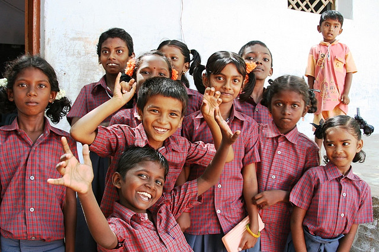

Uthan

Total Money Requested : 234,231
Uthan takes great pride in financial efficiency and accountability. They work to maximize the value of every dollar we receive. More than 90 percent of our expended resources - among the highest of all philanthropic organizations - support our poverty-fighting projects around the world. Less than 10 percent of expended resources go toward administrative and fundraising costs.
Last 3 Transactions
| Spent On |
Amount(In Euro) |
Transaction Date |
| Shelter |
1401 |
25-April-2018 |
| Books |
131 |
31-May-2018 |
| Cleaning |
212 |
1-June-2018 |